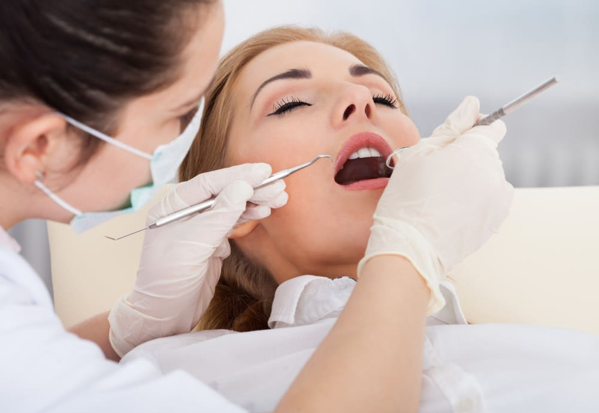
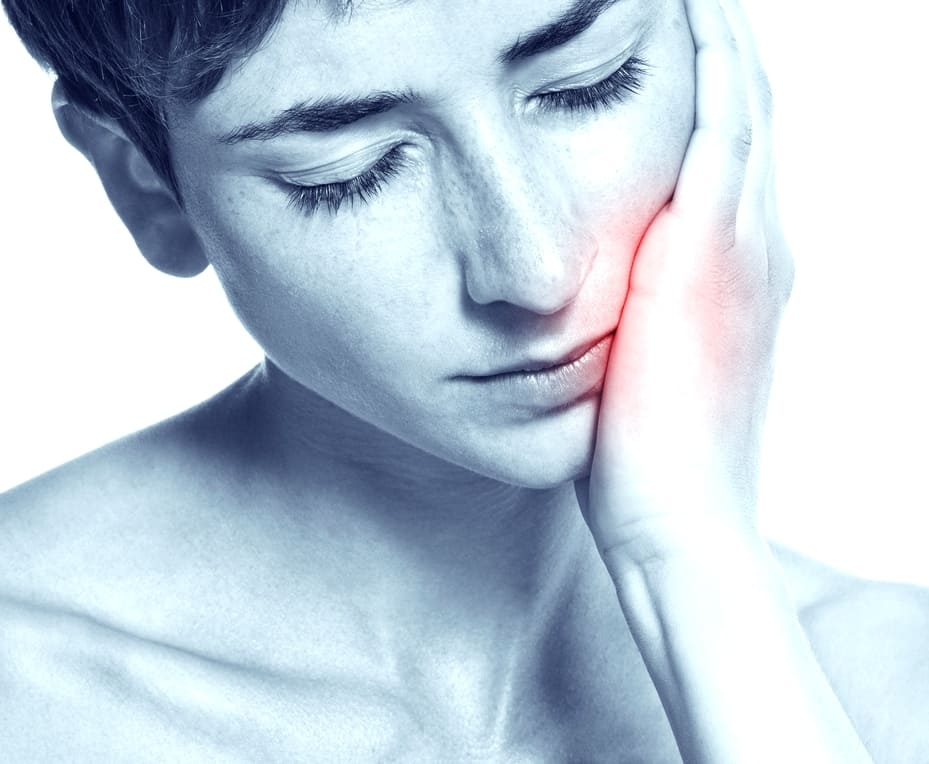
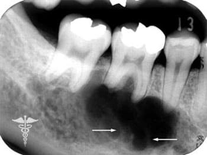
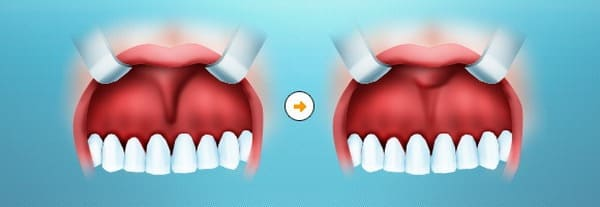
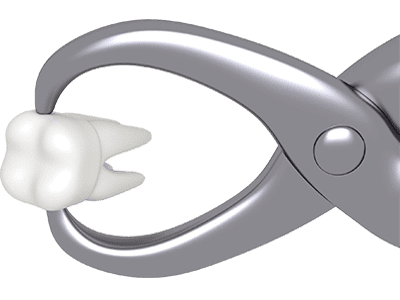
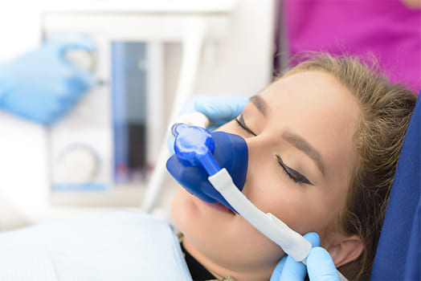

ЛІКУВАННЯ ЗУБІВ ПІД НАРКОЗОМ
Послуга седації (або лікування під загальним наркозом) General anesthesia (GA)
Седація – нове слово у сучасній анестезіології. За допомогою спеціального препарату пацієнта вводять у стан неглибокого сну. Всі болючі відчуття купуються, ніякого дискомфорту при лікуванні зубів. Речовина для седації не є наркотичною і не викликає звикання, вона не заборонена дітям.
Переваги
Побоювання стоматологів та подальшого лікування в стоматологічному кріслі зустрічається досить часто. Багато людей запускають власні зуби, спираючись на сумний досвід. Тим часом є цікаве рішення — лікування зубів уві сні! Заснув, і прокинувся вже зі здоровою та гарною посмішкою. Послуга стає доступною завдяки сучасному безпечному інгаляційному препарату «Севоран», використання якого вже змогли високо оцінити багато пацієнтів стоматологічних клінік у всіх західних країнах.
Як проводиться лікування зубів під седацією?
Це досить проста для пацієнта процедура. Потрібно зробити 5-7 вдихів у масці, після чого настає фаза сну. Якісний препарат знімає больову чутливість, завдяки чому відпадає потреба у місцевій анестезії.
Препарат для седації не викликає звикання організму та не є наркотичним. Вже через 5-10 хвилин після припинення введення "Севорана" пацієнт виходить зі сну, а через 30-60 хвилин він може сміливо вирушати додому.
Дитяча стоматологія та безпечний наркоз
Міф про шкідливий вплив наркозу на організм, що росте, заважає малюкам швидко і акуратно лікувати зубки. Насправді, діти набагато краще його переносять, оскільки в силу юного віку вони ще не встигли обзавестися характерними для дорослих захворюваннями, які можуть стати перешкодою для проведення седації. Багато американських стоматологів рекомендують проводити перше лікування зубів у дітей саме уві сні — це дозволить не створювати негативних вражень від цієї процедури.
Як показує практика, не кожна дитина здатна спокійно просидіти у кріслі стоматолога. До того ж, лише за 1,5-2 години лікування уві сні можна вилікувати всі молочні зубки. Тому наркоз буде як не можна, до речі, і дозволить малюкові всього на один сеанс у лікаря позбавитися всіх проблем. Засинаючи, дитина перестає повертатися і смикатися, завдяки чому стоматологу не потрібно відволікатися на його рухи, проводячи якісніше лікування.
Використання наркозу при лікуванні зубів у дорослих
Даний вид знеболювання активно застосовується при видаленні чи лікуванні зубів, встановленні імплантатів, при великому обсязі робіт. До нього рекомендується звертатися за наявності загальносоматичних захворювань, таких як неврози, гіпертонія чи ішемічна хвороба серця. Стрес від перебування у кріслі стоматолога здатний значно обтяжити дані патології. Перебуваючи уві сні, людина легко перенесе будь-яке лікування незалежно від його обсягу.
Отримати якісне та безболісне лікування зубів під наркозом у Києві ви можете у стоматології «Імперіал». Ми використовуємо лише інноваційні препарати, які не викликають негативних реакцій організму та звикання, але в той же час повністю позбавляють болю.
Лікування зубного флюсу
Флюс (у стоматологічній термінології - періостит) виникає внаслідок занедбаного карієсу. Зубний флюс, по суті, є результатом абсолютно необґрунтованого страху відвідування стоматологічної клініки. Гнійне запалення небезпечне як здоров'я ротової порожнини, а й всього організму.
Чому не варто зволікати з візитом до стоматолога?
Не бажаючи посилювати страждання, і звернутися до лікаря-стоматолога, ми не тільки в юності, а й у зрілому віці часто сподіваємося, що зуб якось вилікується сам собою, треба лише трохи потерпіти. У хід йдуть будь-які засоби: компреси, антибіотики, прикладання грілки, полоскання та бабусині змови. Біль, то відступаючи, то посилюючись, не припиняється - процес руйнування емалі - карієс - невідворотно тягне за собою руйнування дентину, основної тканини зуба, і запалення пульпи, внутрішньої м'якої частини зуба, - пульпіту.
Запущений пульпіт часто призводить до того, що запалення, поширюючись, викликає нагноєння - абсцес, наслідком якого є підвищення температури тіла та набряк м'яких тканин обличчя, званий у просторіччі "флюс"
Флюс - останній сигнал організму про те, що похід до стоматолога не можна відкладати ні на хвилину: гнійне запалення може призвести не тільки до загибелі зуба, але і поширитися далі, м'язи обличчя та шиї. Наслідки цього можуть бути усунені лише хірургічним втручанням. Це найважчий варіант розвитку недуги – коли гній між м'язами проникає усередину тіла, розвивається флегмона, після чого пряма дорога до реанімації.
Особливості лікування
На прийомі у стоматолога пацієнт, який безуспішно займався самолікуванням, часто з подивом дізнається, що в сучасних методах лікування зубів використовується анестезія, за допомогою якої всі болючі та неприємні відчуття відсутні. Нові анестезуючі препарати, безпечні та ефективні, часто призводять до того, що хворий починає навіть спати в стоматологічному кріслі! Півтора десятки років тому таку подію можна було назвати науковою фантастикою.
Лікування абсцесу не займає багато часу: лікар, розрізавши м'які тканини ясен, видаляє гній, а в запущеному випадку – видаляється зуб, після чого пацієнту наказується з підвищеною увагою стежити за чистотою ротової порожнини, уникати фізичних навантажень, а також деякий час приймати протизапальні препарати. Флюс як наслідок абсцесу зазвичай зникає протягом двох-трьох днів після успішного лікування.
Якщо у Вас почав розвиватися флюс, ні в якому разі не можна застосовувати компреси, що зігрівають, це тільки прискорить розвиток запалення і проникнення мікробів в загальний кровотік. При перших симптомах флюсу – сильних чи ниючих болях у зубі, щелепі, почервонінні та припуханні ясен необхідно терміново звернутися до стоматолога. Не варто думати, що біль пройде, а «гнійний мішечок» у яснах розсмокчеться сам собою. Буває й таке, що біль раптово минає, але щока так і залишається припухлим. Це означає, що осередок інфекції нікуди не зник і його необхідно якнайшвидше лікувати! Тільки своєчасна кваліфікована допомога лікаря-стоматолога збереже здоров'я Ваших зубів та ясен. і, звичайно, захворювання легше попередити, ніж вилікувати, тому пам'ятайте про своє здоров'я та звертайтеся до стоматолога раз на півроку
Вилікувати флюс у Києві ви можете, звернувшись до стоматологічної клініки «Імперіал». Завдяки сучасному обладнанню та багаторічному досвіду наших лікарів, процедура завдає мінімум дискомфорту та дозволяє досягти високих результатів.
Лікування кіст зубів
Причини утворення кісти зуба
Травма та інфекція – це основні причини утворення кісти зуба. Інфекція зазвичай потрапляє усередину кореневого каналу при неправильному лікуванні. Часто кіста виникає в результаті гаймориту або будь-якого інфекційного захворювання, при якому шкідливі мікроби переносяться всередину ясна з кровотоком. Протягом тривалого часу кіста ніяк не проявляє себе. Клінічні симптоми з'являються лише тоді, коли вона досягає досить великих розмірів (приблизно 3-4 см у діаметрі) або при загальному ослабленні організму (наприклад, після перенесених інфекційних захворювань). А та область щелепи, де розташований зуб із кістою, опухає, випирає і обличчя стає асиметричним.
Загострення кісти призводить до гнійних процесів у кістковій тканині — флюсу, що не рідко закінчується видаленням зуба. Щоб цього не сталося, необхідно звернутися до лікаря по допомогу.
Лікування кісти зуба
Чим раніше було виявлено кісту та розпочато лікування, тим більша ймовірність зберегти зуб. Лікування кісти може бути проведено двома основними способами, залежно від розміру та типу кісти – безопераційним та хірургічним. При безопераційному методі порожнина кісти заповнюється цементним вмістом, але цей метод прийнятний тільки для зубних кісток невеликих розмірів (до 8 мм в діаметрі).
Набагато частіше застосовується хірургічне втручання. За допомогою цього методу проводиться хірургічне видалення кісти, на жаль, у деяких випадках може знадобитися хірургічне видалення кісти разом із зубом.
Ми проводимо наступні види клаптевих операцій:
• гінгівопластика;
• пластика кісткових кишень;
• остеопластика цілісним алогенним трансплантатом;
• застосування методики спрямованої регенерації тканин пародонту.
Фахівці клініки «Імперіал» мають необхідний досвід та обладнання для проведення зубозберігаючих операцій з видалення кіст. Пам'ятайте, що своєчасне обстеження у стоматолога дозволить виявити проблему на ранній стадії та вирішити її найпростішим способом. Однак навіть запущені форми кіст можна лікувати без видалення здорових ділянок зуба. Для обстеження та отримання консультації ви можете звернутися до наших спеціалістів
Підрізання вуздечки у дитячому віці
Одна з найпоширеніших проблем, які успішно вирішуються дитячими лікарями-хірургами нашої клініки – пластика вуздечки; вартість операції порівняно невисока, а користь від неї безперечна. Залежно від медичних показань може бути проведена пластика вуздечки верхньої губи, вуздечки язика або пластика вуздечки нижньої губи. Вуздечкою називають складку або тяж слизової оболонки, що додатково фіксує губу або язик до щелепи.
Показання до операції
Як правило, вуздечка не заважає дитині їсти і говорити, хоча іноді виникають аномалії, які потребують хірургічного втручання. Якщо вуздечка верхньої губи широка і закріплена від природи занадто низько, то дитині буває важко смоктати материнські груди, а потім - вчитися говорити. Своєчасно поведінкова пластика короткої вуздечки позбавить ваше чадо від цілого ряду можливих проблем:
• появи негарної щілини між верхніми центральними різцями;
• оголення шийок та кореня центральних зубів, що призводить до суттєвого естетичного дефекту та підвищення чутливості зубів на холодне та гаряче;
• розвитку неправильного прикусу тощо.
Найкраще цю операцію проводити, коли у дитини проріжуться чотири верхні постійні різці (5-7 років). Раніше проводити френулопластику годі, т.к. це може призвести до травмування зачатків постійних зубів.
Пластика вуздечки нижньої губи
Вуздечка нижньої губи зустрічається не у кожної людини і навіть якщо вона є у вашої дитини - її НЕ обов'язково потрібно прибирати. Проводити операцію потрібно лише у разі її високого прикріплення чи укорочення.
Укорочена вуздечка нижньої губи – це дефект, який необхідно усувати, адже може призвести до порушення прикусу в дитини. Крім того, коротка вуздечка натягує ясна, провокуючи її рецесію та оголюючи коріння зубів. Це, у свою чергу, призводить до естетичного дефекту та підвищення чутливості зубів, що незабаром може спровокувати їхню втрату. Буває, що в ранньому віці ніяких симптомів даної аномалії батьками не спостерігається (а якщо і спостерігається, то списується на особливості зовнішності малюка). Щоб переконатися, що з вуздечками вашої дитини все гаразд, необхідно пройти профілактичний огляд у дитячого стоматолога. Якщо дитині буде показана пластика вуздечки, вартість операції у нас, напевно, здасться вам прийнятною.
Коли найкраще проводити пластику вуздечки верхньої та нижньої губи?
Якщо йдеться про вуздечку верхньої губи, оптимальним віком для пластики вважається період від п'яти до дев'яти років, коли проріжуться верхні постійні різці, а для пластики вуздечки нижньої губи - 7-9 років. Однак точний час вам може назвати лише досвідчений дитячий лікар-стоматолог. Проводити підрізання цих вуздечок віком від 0 – 4 немає потреби, т.к. вони не заважають дитині смоктати груди, їсти і говорити, тому для досягнення найкращої операції краще відкласти.
Зробити пластику вуздечки ви можете у клініці «Імепріал». Стоматологія надає послуги навіть наймолодшим пацієнтам. Лікарі високої кваліфікації не тільки якісно виконують лікування, але й знаходять підхід до найвибагливіших малюків.
Видалення зубів
Видалення зубів у особливо важких випадках неможливо уникнути. Процедура полягає у вилученні зубів разом із корінням із альвеолярних лунок за допомогою спеціальних інструментів. Сучасні методики забезпечують безболісність видалення.
Видаляти чи не видаляти?
При виявленні проблем із зубами стоматолог намагається всіма можливими методами врятувати їх. Однак у деяких випадках апаратне та медикаментозне лікування не дає бажаного ефекту. Для запобігання ускладненням або за необхідності планового подальшого лікування.
Показання до невідкладного видалення:
• рухливість молочного зуба;
• рухливість зубів 1, 2 та 3 ступеня;
• наявність ортодонтичних показань;
• майбутня дентальна імплантація;
• атипове розташування зубів мудрості;
• наявність доброякісних щелепних пухлин;
• механічне ушкодження кореня (його перелом);
• видалення молочного зуба з метою своєчасного прорізування постійного.
• наявність надкомплектних або ретинованих зубів, що викликають біль та запалення;
• наявність хронічних періодонтитів, кіст зубів, ускладнених гайморитами та/або невралгіями;
• запальні процеси в молочних зубах, які спричиняють запалення зачатків постійних зубів;
Лікування зубів під седацією
Седація – нове слово у сучасній анестезіології. За допомогою спеціального препарату пацієнта вводять у стан неглибокого сну. Всі болючі відчуття купуються, ніякого дискомфорту при лікуванні зубів. Речовина для седації не є наркотичною і не викликає звикання, вона не заборонена дітям.
Переваги
Побоювання стоматологів та подальшого лікування в стоматологічному кріслі зустрічається досить часто. Багато людей запускають власні зуби, спираючись на сумний досвід. Тим часом є цікаве рішення — лікування зубів уві сні! Заснув, і прокинувся вже зі здоровою та гарною посмішкою. Послуга стає доступною завдяки сучасному безпечному інгаляційному препарату «Севоран», використання якого вже змогли високо оцінити багато пацієнтів стоматологічних клінік у всіх західних країнах.
Як проводиться лікування зубів під седацією?
Це досить проста для пацієнта процедура. Потрібно зробити 5-7 вдихів у масці, після чого настає фаза сну. Якісний препарат знімає больову чутливість, завдяки чому відпадає потреба у місцевій анестезії.
Препарат для седації не викликає звикання організму та не є наркотичним. Вже через 5-10 хвилин після припинення введення "Севорана" пацієнт виходить зі сну, а через 30-60 хвилин він може сміливо вирушати додому.
Дитяча стоматологія та безпечний наркоз
Міф про шкідливий вплив наркозу на організм, що росте, заважає малюкам швидко і акуратно лікувати зубки. Насправді, діти набагато краще його переносять, оскільки в силу юного віку вони ще не встигли обзавестися характерними для дорослих захворюваннями, які можуть стати перешкодою для проведення седації. Багато американських стоматологів рекомендують проводити перше лікування зубів у дітей саме уві сні — це дозволить не створювати негативних вражень від цієї процедури.
Як показує практика, не кожна дитина здатна спокійно просидіти у кріслі стоматолога. До того ж, лише за 1,5-2 години лікування уві сні можна вилікувати всі молочні зубки. Тому наркоз буде як не можна, до речі, і дозволить малюкові всього на один сеанс у лікаря позбавитися всіх проблем. Засинаючи, дитина перестає повертатися і смикатися, завдяки чому стоматологу не потрібно відволікатися на його рухи, проводячи якісніше лікування.
Використання наркозу при лікуванні зубів у дорослих
Даний вид знеболювання активно застосовується при видаленні чи лікуванні зубів, встановленні імплантатів, при великому обсязі робіт. До нього рекомендується звертатися за наявності загальносоматичних захворювань, таких як неврози, гіпертонія чи ішемічна хвороба серця. Стрес від перебування у кріслі стоматолога здатний значно обтяжити дані патології. Перебуваючи уві сні, людина легко перенесе будь-яке лікування незалежно від його обсягу. Середній вік пацієнтів, які вдаються до седації при лікуванні зубів, коливається від 30 до 65 років.
Лікування під седацією в клініці «Імперіал» – це комфортно, цілком безболісно та ефективно. Ми використовуємо лише сертифіковані та повністю безпечні препарати, які допоможуть вас перенести будь-які маніпуляції без страху та неприємних відчуттів.